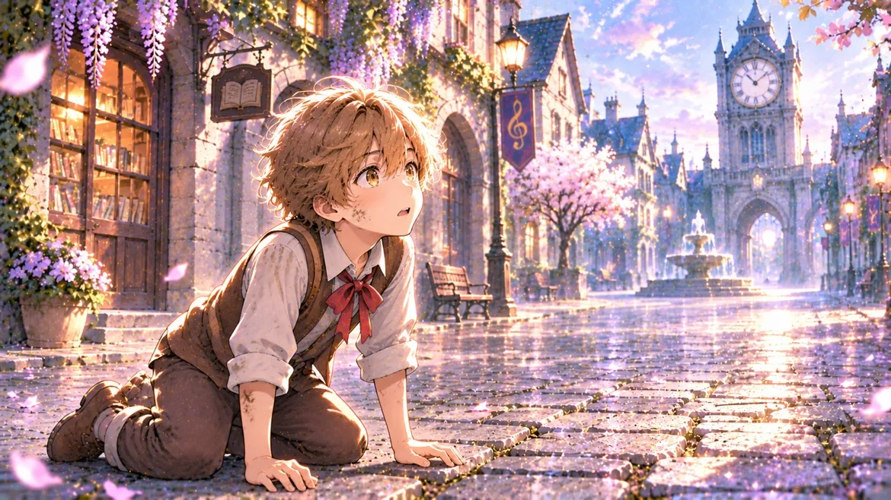
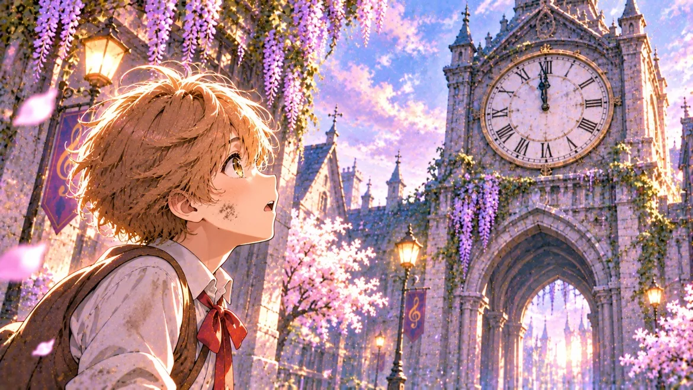
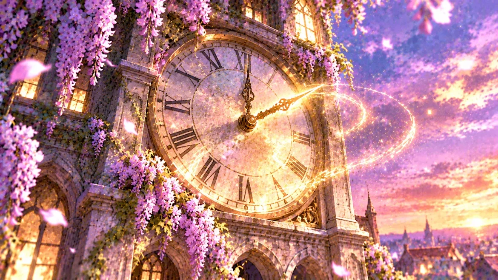
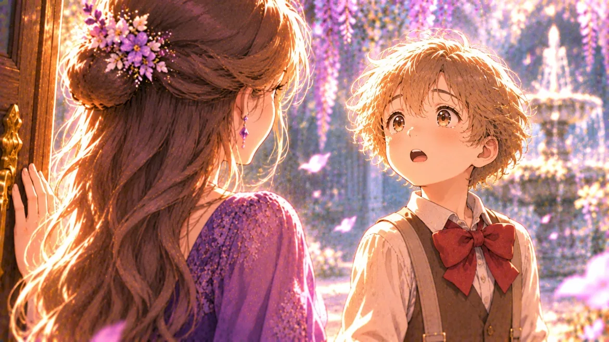
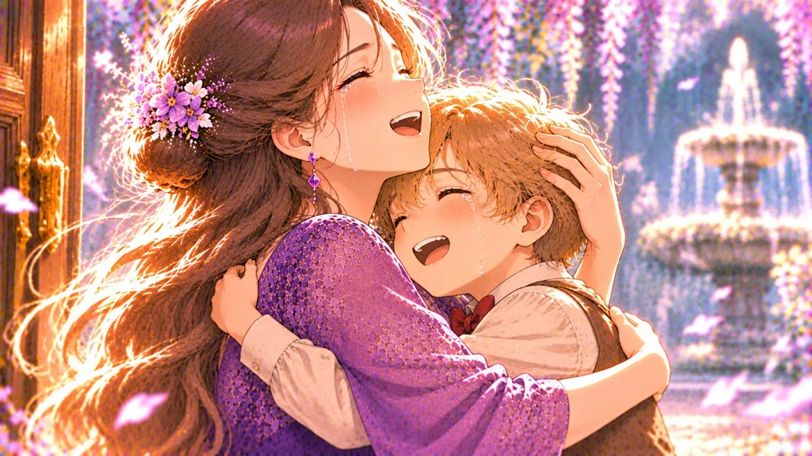
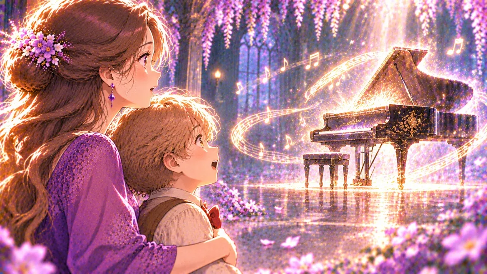
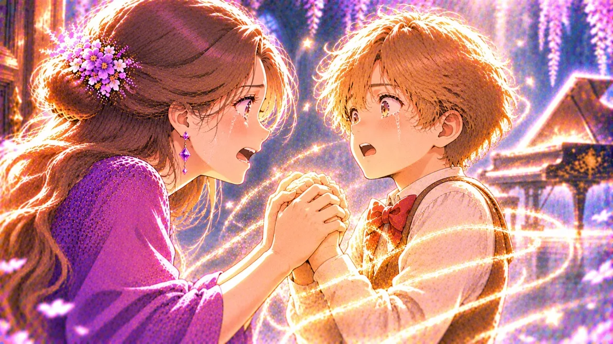
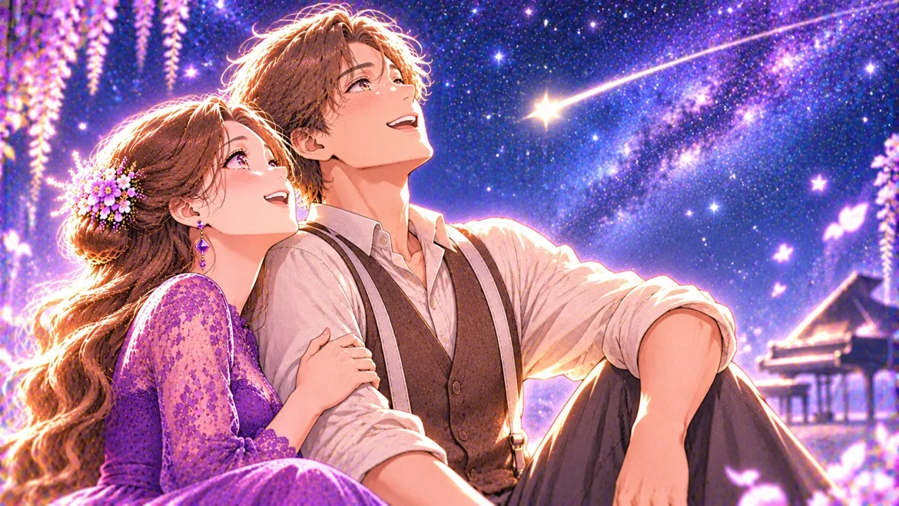

『星が降る夜のピアニストⅡ』

冷たい石畳の上で、少年は目を覚ました。
「……ここ、どこ？」

ゆっくり起き上がる。
見覚えのない街並みが、どこまでも続いていた。

通りには、誰もいない。
風の音さえ、聞こえなかった。

少年は時計塔を見上げた。
針は、十二時を指したまま止まっている。

「あの子は……？」
少年は石畳を走り、何度も彼女の名を呼んだ。
けれど、返事はなかった。

とうとう少年は、広場のベンチに座り込んだ。
「もう一度、会いたいのに……」

そのとき。
静まり返った街の奥で、何かが少年の心に触れた。

細い路地の先に、小さな建物が見えた。
少年は、吸い寄せられるように歩き出した。
扉の向こうには、一台の古いピアノ。
少年は、そっと鍵盤に指を置いた。

ぽろん、ぽろん。
「あっ……また間違えた！」
思うように弾けず、少年は唇をかんだ。

ふいに、あの夜がよみがえる。
隣にいた少女。二人で弾いた、あの旋律。
笑い声まで、聞こえる気がした。

「……もう一度。」
少年は背筋を伸ばし、鍵盤に向き直った。

最後の一音が、静かに響いた。
今度は、間違えなかった。

かちり。
止まっていた時計の針が、動き出した。

光があふれ、風が街を駆け抜ける。
止まっていた世界が、息を吹き返していく。

まばゆい光の向こうに、見覚えのある建物が現れた。
あの夜の、音楽堂だった。

少年が足を止めると、どこからかピアノの音が聞こえた。
胸の奥が、どきんと鳴る。

少年は、知らず知らず鼻歌を口ずさんでいた。
あのとき、二人で弾いた曲だ。

音楽堂の中では、一人の女性がピアノを弾いていた。
長い年月を越えても、その旋律を忘れずに。

ふと、女性の指が止まった。
扉の向こうから、懐かしい鼻歌が聞こえたのだ。

女性は立ち上がり、扉へ駆け寄った。
そして、そっと扉を開いた。

そこに立っていたのは、あの夜のままの少年だった。
「……え？」

女性は両手で口を覆った。
信じられない。けれど、見間違えるはずがない。

「……会いたかった！」
二人は駆け寄り、互いの手をぎゅっと握った。

泣きながら、笑った。
もう会えないと思っていた人が、今、ここにいる。

そのとき、誰も触れていないピアノが鳴り始めた。
あの旋律が、音楽堂いっぱいに広がっていく。

「えっ……？」
少年は、自分の手が光っていることに気づいた。

女性は慌てて少年の手をつかんだ。
「ねえ、また光って消えないよね？ ねえ、ちょっと……！」

光はますます強くなる。
「待って……！」
伸ばした指先が、離れてしまった。

光がやむと、そこにいたのは背の高い青年だった。
「……え？ ぼく……？」
女性は、また両手で口を覆った。

青年は自分の胸に手を当て、少し照れくさそうに笑った。
「……ぼく、消えてないよ？」

二人は並んで座り、空を見上げた。
星が、次から次へと流れていく。
今度は、同じ時間の中で。

二人はまた、ピアノの前に座った。
顔を見合わせ、笑いながら、あの曲を歌い、奏でた。

ところが――。
ぽろん。
「……あっ、また間違えた！」
女性は思わず吹き出した。
二人の笑い声が、音楽堂に響いた。

長い時間を越えて、二人はようやく隣り合えた。
今夜も、星が降っている。

星が降る夜。
あの旋律は、これからも続いていく。
――二人の時間と、ともに。